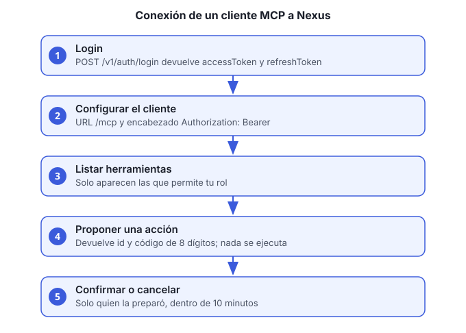

Objetivo: usar las herramientas de Nexus desde un cliente MCP (por ejemplo, un asistente de escritorio que acepte servidores MCP remotos) con tu propio usuario y tu rol.

Un cliente MCP no tiene permisos propios: cada llamada usa tu access token, así que solo ves y puedes hacer lo que permite tu rol.
Antes de empezar
- Un usuario activo con correo y contraseña definitiva.
- La URL del gateway de tu ambiente (aquí
http://HOST; en local,http://localhost:8080).
Pasos
Inicia sesión y guarda los dos tokens:
curl -s -X POST http://HOST/usuarios-accesos-ms/v1/auth/login \ -H "Content-Type: application/json" \ -d '{"correo":"TU_CORREO","password":"TU_CONTRASEÑA"}'La respuesta trae
accessToken(vence en 15 minutos) yrefreshToken(vence 7 días después de su último uso).Configura el cliente MCP:
- URL del servidor:
http://HOST/mcp - Encabezado:
Authorization: Bearer ACCESS_TOKEN
El campo exacto cambia de un cliente a otro. Revisa la documentación del cliente para «servidor MCP remoto» y «encabezados».
- URL del servidor:
Prueba la conexión. Pide al cliente que liste las herramientas. Debes ver al menos
consultar_politicas,sugerir_poliza,confirmar_accionycancelar_accion, además de las que correspondan a tu rol.Renueva el token cuando venza. Cada 15 minutos, o cuando el cliente responda 401:
curl -s -X POST http://HOST/usuarios-accesos-ms/v1/auth/refresh \ -H "Content-Type: application/json" \ -d '{"refreshToken":"REFRESH_TOKEN"}'La respuesta trae un refresh token nuevo. Guarda siempre el último: el anterior queda invalidado.
Si usas un refresh token que ya fue rotado, el servicio revoca toda la sesión por seguridad. Vuelve al paso 1.
Cierra la sesión al terminar en un equipo compartido:
curl -s -X POST http://HOST/usuarios-accesos-ms/v1/auth/logout \ -H "Content-Type: application/json" \ -d '{"refreshToken":"REFRESH_TOKEN"}'
Cómo funciona una acción que modifica datos
Las herramientas que escriben no ejecutan nada de inmediato:
sugerir_poliza(o la herramienta de la acción) prepara la acción y devuelve un id y un código de confirmación de 8 dígitos.- Revisas la propuesta en el cliente.
confirmar_accioncon el id y el código la ejecuta. Solo funciona para quien la preparó y dentro de 10 minutos.cancelar_accionla descarta sin ejecutarla.
Si el código es incorrecto, la acción se cancela por seguridad: hay que pedir una nueva propuesta.
Verificación
- El cliente lista las herramientas del paso 3.
- Una consulta de lectura (por ejemplo,
consultar_politicas) devuelve resultados. - Una propuesta muestra id y código, y no cambia datos hasta que la confirmas.
Problemas comunes
| Síntoma | Causa | Qué hacer |
|---|---|---|
| 401 en todas las llamadas | El token venció o está mal copiado | Renueva el token (paso 4) |
| 403 en una herramienta | Tu rol no tiene permiso | Pide el rol al administrador |
confirmar_accion falla |
Pasaron 10 minutos o confirma otro usuario | Pide una nueva propuesta |
| El cliente no ve herramientas | URL sin /mcp o sin http:// |
Corrige la URL del paso 2 |
Notas del piloto y decisiones de diseño: conexion-mcp.md.